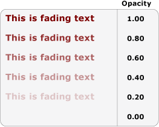

Практическое руководство. Применение анимаций к тексту
Анимации могут менять отображение и внешний вид текста в приложении. В следующих примерах используются различные виды анимации влияющие на отображение текста в TextBlock элемента управления.
Пример
В следующем примере используется DoubleAnimation для анимации ширины текстового блока. Значение ширины за 10 секунд меняется с ширины текстового блока до 0, затем значения ширины меняются местами и анимация продолжается. Этот тип анимации создает эффект очистки.
<TextBlock
Name="MyWipedText"
Margin="20"
Width="480" Height="100" FontSize="48" FontWeight="Bold" Foreground="Maroon">
This is wiped text
<!-- Animates the text block's width. -->
<TextBlock.Triggers>
<EventTrigger RoutedEvent="TextBlock.Loaded">
<BeginStoryboard>
<Storyboard>
<DoubleAnimation
Storyboard.TargetName="MyWipedText"
Storyboard.TargetProperty="(TextBlock.Width)"
To="0.0" Duration="0:0:10"
AutoReverse="True" RepeatBehavior="Forever" />
</Storyboard>
</BeginStoryboard>
</EventTrigger>
</TextBlock.Triggers>
</TextBlock>
В следующем примере используется DoubleAnimation для анимации прозрачности текстового блока. Значение прозрачности меняется с 1,0 до 0 в течение 5 секунд, затем значения меняются местами и анимация продолжается.
<TextBlock
Name="MyFadingText"
Margin="20"
Width="640" Height="100" FontSize="48" FontWeight="Bold" Foreground="Maroon">
This is fading text
<!-- Animates the text block's opacity. -->
<TextBlock.Triggers>
<EventTrigger RoutedEvent="TextBlock.Loaded">
<BeginStoryboard>
<Storyboard>
<DoubleAnimation
Storyboard.TargetName="MyFadingText"
Storyboard.TargetProperty="(TextBlock.Opacity)"
From="1.0" To="0.0" Duration="0:0:5"
AutoReverse="True" RepeatBehavior="Forever" />
</Storyboard>
</BeginStoryboard>
</EventTrigger>
</TextBlock.Triggers>
</TextBlock>
В примере ниже показан эффект TextBlock управления, прозрачность которого меняется с 1.00 для 0.00 во время 5-секундный интервал, определяемый Duration.

В следующем примере используется ColorAnimation для анимации основного цвета текстового блока. Значение основного цвета меняется с первого цвета на второй в течение 5 секунд, затем значения цвета меняются местами и анимация продолжается.
<TextBlock
Name="MyChangingColorText"
Margin="20"
Width="640" Height="100" FontSize="48" FontWeight="Bold">
This is changing color text
<TextBlock.Foreground>
<SolidColorBrush x:Name="MySolidColorBrush" Color="Maroon" />
</TextBlock.Foreground>
<!-- Animates the text block's color. -->
<TextBlock.Triggers>
<EventTrigger RoutedEvent="TextBlock.Loaded">
<BeginStoryboard>
<Storyboard>
<ColorAnimation
Storyboard.TargetName="MySolidColorBrush"
Storyboard.TargetProperty="Color"
From="DarkOrange" To="SteelBlue" Duration="0:0:5"
AutoReverse="True" RepeatBehavior="Forever" />
</Storyboard>
</BeginStoryboard>
</EventTrigger>
</TextBlock.Triggers>
</TextBlock>
В следующем примере используется DoubleAnimation для вращения текстового блока. Текстовый блок выполняет полный поворот за 20 секунд, а затем повторяет вращение.
<TextBlock
Name="MyRotatingText"
Margin="20"
Width="640" Height="100" FontSize="48" FontWeight="Bold" Foreground="Teal"
>
This is rotating text
<TextBlock.RenderTransform>
<RotateTransform x:Name="MyRotateTransform" Angle="0" CenterX="230" CenterY="25"/>
</TextBlock.RenderTransform>
<!-- Animates the text block's rotation. -->
<TextBlock.Triggers>
<EventTrigger RoutedEvent="TextBlock.Loaded">
<BeginStoryboard>
<Storyboard>
<DoubleAnimation
Storyboard.TargetName="MyRotateTransform"
Storyboard.TargetProperty="(RotateTransform.Angle)"
From="0.0" To="360" Duration="0:0:10"
RepeatBehavior="Forever" />
</Storyboard>
</BeginStoryboard>
</EventTrigger>
</TextBlock.Triggers>
</TextBlock>